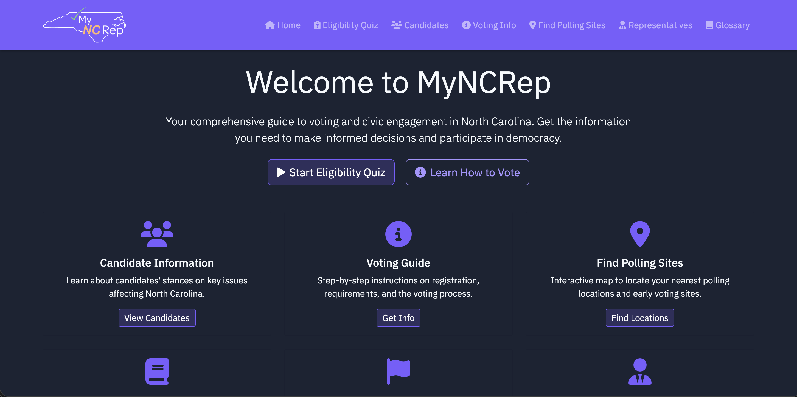
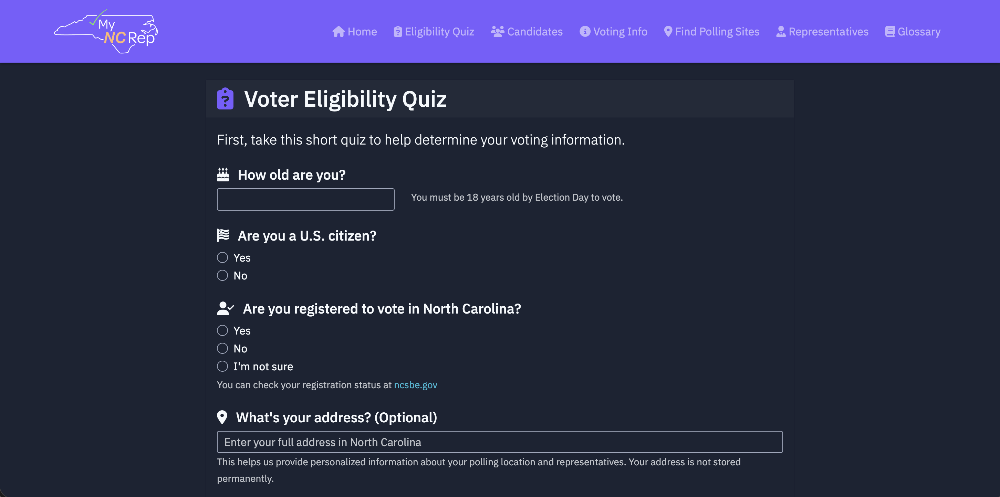
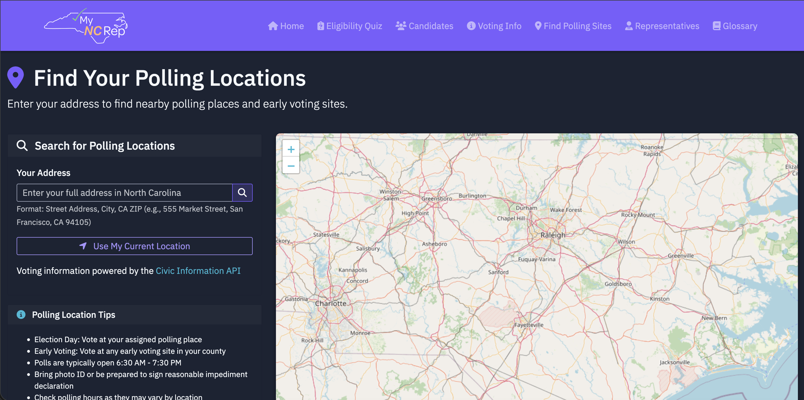

🏛️
MyNCRep
What
A civic tool that helps NC voters cut through the noise and actually understand what matters on election day. Shows where to vote, what to bring, and what each candidate stands for—no spin, no party narratives.
Built for the 2025 Congressional App Challenge. The assumption: new voters don't lack opinions, they lack context.
We implemented fallback logic for gaps in the Voting Information Project data, balanced API calls against local caching, and designed privacy-first location features with neutral, verifiable civic information.
Source code
I won't walk through every feature, but here's what matters. You can check the live demo if you want to see it work.
This is the home hub for MyNCRep, giving voters a clear entry point into everything they need: an eligibility quiz, a step‑by‑step voting guide, candidate information, and tools to find their polling place in one place.

The eligibility quiz walks users through age, citizenship, registration status, and optionally address. It tailors voting guidance and links directly to North Carolina's registration resources.

The polling finder lets voters search by address or current location and plots nearby polling sites on an interactive map. It uses Google's Civic Information API alongside OpenStreetMap tiles to power the whole experience.

Case Study
This project reminded me why I build things. It combined problem-solving with creating something tangible that could actually help people.
This was also the most fun I've had on a project. This was the one where I got to work with a team.
Four people who all care about code came together to build something useful. The energy was real, ideas flowed freely, and the momentum made every challenge worth it.
Context
MyNCRep started simple. We wanted to build a platform that could help North Carolina residents understand who represents them and what resources they have access to. Civic tools are rarely elegant, rarely intuitive, and rarely built for the people who need them most. We wanted to change that.
My leasing office had a conference room on the second floor. We'd sit there for hours coding, testing, recording demos, whatever needed to happen. These were the kind of sessions where you forget to check the time because you're following momentum.
Approach
The system was straightforward.
We built a React frontend that was clean, fast, and structured for people who didn't want to fight their way through government websites. We built a Node.js backend that was steady and predictable, handling API requests and filtering data so users only saw what mattered.
Each piece was written with the intention of making civic information feel less like a labyrinth and more like a tool.
Outcome
The web app delivered the clarity we wanted. This was my first time building a product this size from scratch, and it turned out solid.
And quite easily, the hardest part wasn't handling the APIs correctly, or debugging edge cases, or even coming up with an idea.
It was the video submission. We had three minutes to explain everything we built. We cut it down from hours of footage, scripted it so it would flow, and made it feel human instead of robotic. That took more iterations than the actual code.
Tech Stack
Frontend
- HTML / CSS / JavaScript
- Leaflet.js (mapping)
- OpenStreetMap
Backend
- Python
- Flask / FastAPI (web framework)
- Poetry (dependency management)
APIs
- Google Civics API
- Vote Smart API
- North Carolina State Board of Elections (NCSBE) API
Dev tools
- Python virtual environment (venv)
- .env configuration